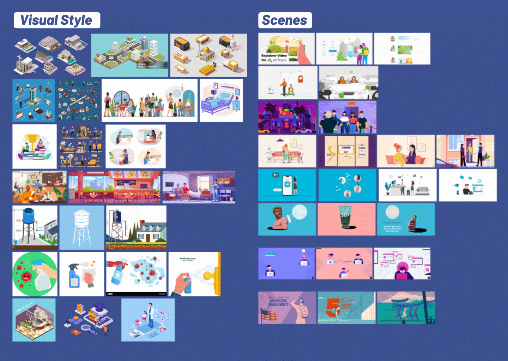
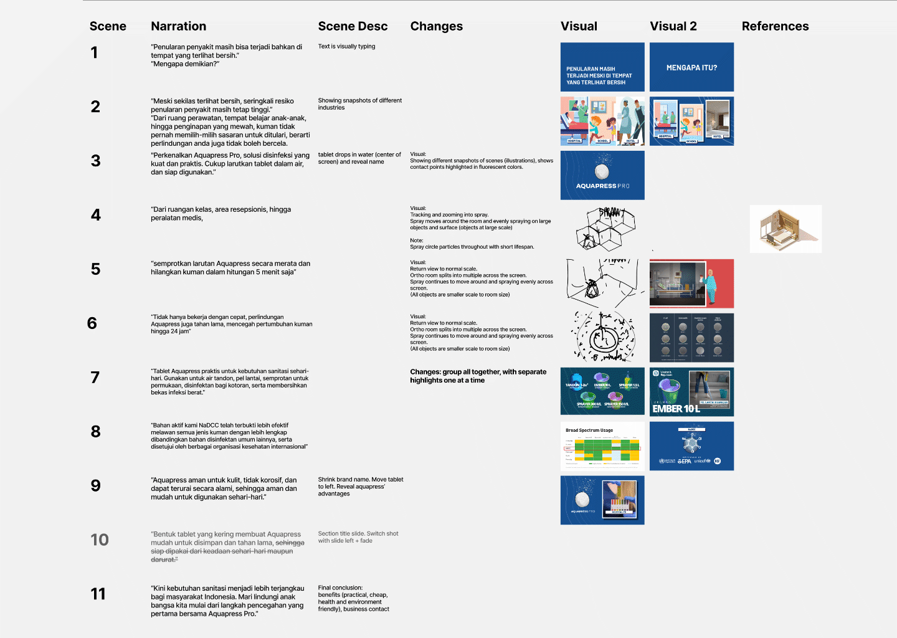

The development process closely follows the studio's project framework. Following the structure of moodboards, storyboards, and multiple draft stages results in better structure during the development process with the added bonus of better estimates for deliverables.

A collection of moodboards were compiled to assist in visualizing the client's intended direction. Beginning from one of the studio's project which the client took interest in. The follow up storyboard is quickly iterated upon the client's ideas and requests to materialize the initial concept for the project contents.